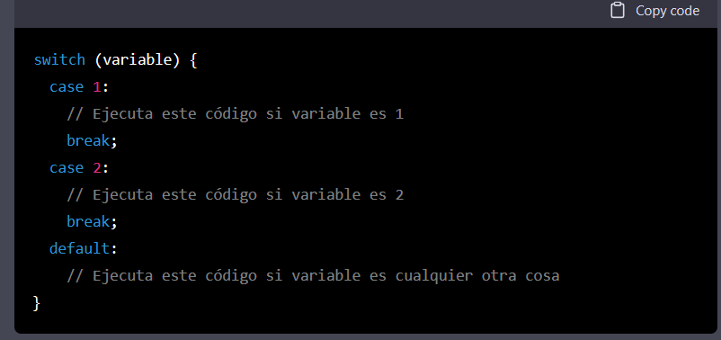

Los atributos de software son características o cualidades del software que pueden ser medidas o evaluadas de alguna manera. Algunos ejemplos de atributos de software por ejemplo
es el entorno de desarrollo integrado (IDE) oficial para el desarrollo de apps para Android
Una vez descargado el archivo de instalación, abre el archivo "android-studio-ide-202x.x.x.exe" para iniciar la instalación
plataforma de hardware y software libre basada en un microcontrolador y un entorno de desarrollo integrado (IDE) que se utiliza para crear proyectos de electrónica y robótica
Como el programa de inicio más importante de tu PC, el BIOS (sistema básico de entrada / salida, por sus siglas en inglés), es el software integrado al procesador central responsable de iniciar tu sistema
significado1: son sistemas que intenta proporcionar para ayuda automatizar el procesos de sodtware
significado 2:
En programación, la palabra "case" se utiliza a menudo en estructuras de control de flujo como el "switch" en lenguajes de programación como C, C++, Java y muchos otros. Un "case" en una estructura "switch" es una opción dentro de un conjunto de posibles opciones. Por ejemplo, podría tener una estructura "switch" que evalúe una variable y ejecute una acción diferente en función del valor de la variable. Cada "case" representa un valor diferente para la variable y un conjunto de instrucciones que se deben ejecutar si la variable tiene ese valor
son problemas o deficiencias en el software que impiden que funcione correctamente. Los fallos pueden ser de diferentes tipos, dependiendo de la causa y del impacto que tienen en el software. Algunos tipos comunes de fallos
son errores en la estructura del código, como faltas de comillas o paréntesis. Estos fallos generalmente se detectan fácilmente durante la compilación o el análisis del código
son errores en la lógica del programa, que pueden hacer que el software no funcione de la manera esperada. Por ejemplo, un fallo lógico podría causar que un programa calcule un resultado incorrecto
son errores que ocurren cuando el software no tiene acceso a los recursos necesarios para funcionar, como memoria o espacio en disco
on errores que pueden afectar la seguridad del software, como vulnerabilidades que pueden ser explotadas por atacantes
son errores que afectan el rendimiento del software, como retrasos o bloqueo
es la cantidad de elementos del sistema la interaccion entre ellos
como codigo fuente cantidad modulos o componenetes del sistemas o interfaces
maquina diseñada para realizar calculos y procesos de informacion automatica
es una combinacion de hardware y software
hace referencia a su rendimiento la probabilidad que funcione de manera correcta y sin errores durante un tiempo
a los costos referentes a errores o defectos de sistema
que son causados durtante el desarollo como mala calidad del codigo o falta pruebas adecuadas o falta documentacion
son normas y estandares para la calidad de software o industrias
unidad central de procesamiento
es un chip de la computadora que realiza la mayor parte del procesamiento
que controla otros componentes de computadora
ejecuta, realizando cálculos, tomando decisiones basadas en esos cálculos y controlando el movimiento de datos dentro de la computadora
el 60%son costos de desaroollo el 40% pruebas de software
influye como tipo deproyecto ubicacion complejidad y la duracion del proyecto
y la experiencia del programador o del equipo
ejemplos:
Las capas de transporte en una red de computadoras son el nivel de abstracción en el modelo de referencia OSI (Open Systems Interconnection) que se encargan de proporcionar servicios de comunicación a nivel de aplicación. Estas capas se encuentran entre la capa de aplicación y la capa de enlace de datos en el modelo OSI y son responsables de la entrega fiable de los mensajes entre los sistemas de computadoras. Las capas de transporte incluyen la capa de transporte y la capa de sesión. La capa de transporte se encarga de la entrega confiable de los mensajes y proporciona servicios como control de flujo, segmentación y reensamblaje de mensajes. La capa de sesión se encarga de la establecimiento, el mantenimiento y el final de las sesiones de comunicación entre aplicaciones.
se refiere a la capa de transporte de la arquitectura de red de siete capas OSI
que la salida depende únicamente de la configuración actual de las entradas. En otras palabras, la salida del circuito no depende del estado anterior de las entradas o de la salida. Los circuitos de combinación se utilizan a menudo en sistemas digitales para realizar operaciones lógicas y para controlar el flujo de datos.
Los codificadores lógicos digitales son circuitos electrónicos que convierten una entrada de datos en una salida de datos codificada de acuerdo con una tabla de verdad específica. Los codificadores son utilizados en sistemas de computación y control para procesar y transmitir información.Los codificadores lógicos digitales pueden ser de varios tipos, como codificadores de n bits, codificadores de prioridad y codificadores de paridad. Los codificadores de n bits tienen n entradas y generan una salida codificada de m bits, donde m es el número de combinaciones posibles de las entradas. Los codificadores de prioridad tienen múltiples entradas y una salida, y se utilizan para determinar qué entrada tiene prioridad sobre las demás. Los codificadores de paridad tienen una entrada de datos y una entrada de paridad y generan una salida que indica si el número de unos en la entrada de datos es par o impar. Los codificadores lógicos digitales se utilizan en una amplia variedad de aplicaciones, como la transmisión de datos, la medición y el control de procesos industriales, y la automatización de sistemas de producción. También se utilizan en dispositivos de entrada/salida de computadoras, como teclados y monitores, para procesar y transmitir la información que se ingresa o se muestra en la pantalla.
proporciona los servicios de red como ejemplo un navegador un cliente correo
es un acronimo de
son los fundamentos de aplicaciones de base de datos
son metodos para gestionar una base de datos para la gestion de registros
si usted desea realizar una aplicacion para una tienda
son elementos que dan una funcion logica mediante una combina de entradas
se usan en electonica para llevar operaciones como negacion conjucion disyuncion y ampliacion
un sitema de alarma tiene varias entradas como puertas y ventanas
que se activan si abre o cierra
cuando hay un sensor de movimiento envia un AND ya que varifica que el sistema esta activado
si hay un sistmea de panico y cumple las condiciones el AND envia una señal a la sirena
que devuelve un valor verdadero si cualquiera de los operandos es verdadero y un valor falso si ambos operandos son falsos.
será verdadera solo si al menos una de sus entradas es falsa. Se puede representar gráficamente mediante una tabla de verdad o mediante un diagrama de circuito. La compuerta NAND se puede construir a partir de compuertas AND y NOT simples. Su nombre es un acrónimo de "NOT AND" (NO Y)
es un tipo de compuerta lógica que tiene dos o más entradas y una salida. Su función es inverter el resultado de la compuerta AND exclusiva (XAND) para obtener el resultado de la compuerta OR exclusiva (XOR).
Un demultiplexor es un dispositivo digital que permite seleccionar una de varias entradas y enviarla a una salida específica. Los demultiplexores se utilizan a menudo en sistemas de computadora para controlar la entrada y salida de datos
r es un dispositivo que convierte una señal codificada en un formato específico en una señal de salida legible para un sistema o dispositivo
son un tipo de diagrama que se utiliza para representar gráficamente la transferencia de datos en un sistema de información. Estos diagramas se utilizan para modelar la manera en que se procesan, almacenan y transmiten los datos en un sistema, y para representar la relación entre diferentes componentes del sistema.
es un dispositivo de almacenamiento de datos que se utiliza en computadoras y otras máquinas para guardar y acceder a archivos digitales
implica el uso de técnicas de análisis de datos, como el análisis de componentes principales, el clustering y el aprendizaje automático, para explorar y analizar datos de manera más eficiente y encontrar patrones y tendencias que de otra manera podrían pasar desapercibidos
Los defectos o fallos del sistema en ingeniería de software son errores o problemas que surgen en el desarrollo o uso de un software. Algunos ejemplos comunes de defectos del sistema son
es un enfoque de desarrollo de software que implica la construcción y entrega de un producto software en etapas sucesivas, en lugar de intentar desarrollar todo el software de una sola vez. En cada iteración, se desarrolla un conjunto específico de funcionalidades y se entrega al cliente para su revisión y retroalimentación. Esto permite que el equipo de desarrollo se enfoque en un conjunto específico de funcionalidades en cada iteración, lo que puede ser más fácil de manejar y planificar
en desarrollo de software se refiere a la facilidad con la que una aplicación o sistema puede estar disponible para su uso durante el proceso de desarrollo. Esto es importante porque una alta disponibilidad en desarrollo significa que los desarrolladores pueden trabajar con el software de manera más eficiente y sin interrupciones, lo que puede mejorar la calidad del producto final.
es un protocolo de enrutamiento que se utiliza en redes de computadoras para permitir que los routers intercambien información de enrutamiento y encuentren la mejor ruta para enviar paquetes de datos a su destino. EIGRP es un protocolo de enrutamiento de estado de enlace (LSR) que utiliza algoritmos de estado de enlace para determinar la mejor ruta para enviar paquetes de datos.
conjunto de activades cuya meta es el desarrollo o evolucion del software